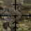

Production Notes - Scene 11 - Skirmish in Saint-Lambert-sur-Dives
The purpose of this scene becomes obvious at the end - it is to tribute the sacrifice made by Lance several days prior.
The squad has made it into Saint-Lambert, and since relieved the Canadian soldiers who had been stationed there.
They are actually waiting for two other small squads to arrive, who have been held up (the dialog at the end of scene 8, and the end of this scene, explains why).
Historically, there was no such documented skirmish in Saint-Lambert-sur-Dives in early September.
However, a Canadian division led by Major David Currie did indeed repel a superior German force between August 19 and August 22, 1944.
This is the third scene in the film for which the visuals were carefully crafted to match the music.
The first portion of this scene is largely musical, set to Advancing Army.
The remainder of the scene is either silent, or has Femme Fatale playing faintly in the background as Norfolk confronts the tardy squad Sergeant.
Iconic imagery:

A look through the German sniper's scope as he targets Corporal Devin desperately rushing across the battletorn street.
Visual editing you may not have noticed:
- From end-to-end, this scene is about 4-and-a-half minutes and consists of 81 shots - by far the most complex scene in the film. 51 of these shots are for the battle sequence alone, which lasts just over 2 minutes.
- The shot of Alex being hit by the sniper is indeed from "Sniper Ambush", but the camera angle here carefully hides the fact that he's oriented in completely the wrong direction. ;)
- During the battle sequence, there are 24 unique camera angles (and in some cases, different actor assignments) of "Covering Fire".
- The battle sequence also contains shots from just about every battle-related scene the game provides: "Sniper", "Storm Machine Gun", "Soldier's Shoot", "Sniper Duel", and even a few seconds from the dreaded "Ain't Over Yet". ;)
- The "Ain't Over Yet" moment is actually filmed on the Bluescreen set, with a transparent overlay depicting the pillars.
Musical cues you may not have noticed:
- The first double drum cue matches the first overhead shot of the squad traveling toward the intersection.
- The next single drum cue matches the reveal of the sniper in the window.
- The second double drum cue matches the second overhead shot of the squad.
- The three frantic flute cues match the various German soldiers positioning themselves on the intersection. The first is the soldier manning the machine gun that Cooper ultimately takes out; the second the main machine gunner; and the third is already hiding out amongst the pillars.
- The string section cue matches the final overhead shot of the squad. I even tried getting the horn section beat timed with their footsteps. ;)
- The next frantic flute cues matches the first-person view of the sniper spotting Alex.
- The final horn section cue before the main portion of the song matches the overhead shot of Alex being hit.
- A full decrescendo plays as Devin rushes across the street, the sniper trying to spot him.
- A quick string cue plays as Cooper stops before taking aim at the first machine gunner.
- The diverging string sections play as Devin engages in hand-to-hand with the German soldier who was hiding amongst the pillars.
- The string section decrescendo plays as we zoom in on Cooper aiming at the sniper.
- The next crescendo plays as the sniper searches the area, culminating in the final string cue as the sniper is hit.
- A triumphant horn cue plays as the German soldier Devin shot falls.
- The final note plays as the main machine gunner is hit.
Sound editing you may not have noticed:
- The rain sound that plays throughout this scene was extracted from the game's sound files. On my computer, using the default sound effects causes starts-and-stops in what ought to be a steady sound of rain - something I was not willing to live with.
- All the gunfire sounds in this scene do indeed come from the default sound effects. However, I filmed this entire scene once without the rain; purely to retrieve the gun and footstep sounds. Every shot was exported whole, without any editing in Post Production. This method allowed me to retain the game's stereo sound capabilities, and ensured all sound effects that crossed over into the next shot (once edited) played to completion.
- Every gunfire sound was carefully adjusted for volume. In the case of the zoom-in on the main German machine gunner, I even had the volume increase as the camera moved closer. ;)
Script changes by JazzX:
- The beginning of the line "Yes! And two days ago we lost one of our men while we were on the way in." was completely changed to "Nooo, the bleedin' North Pole. Whaddya think?!" ;)
The Riley Programming Site

{kind=link}